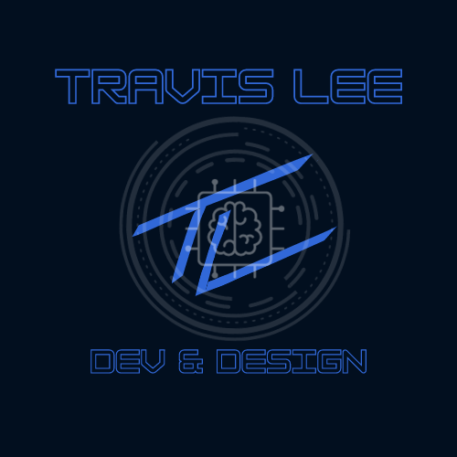

Dev & Design
About Me
Bio
I was introduced to the world of programming in my early teens by my dad, who recognized it's growing role in the world and wanted me to give it a try to see if I had any interest in it. He started me on a JavaScript course on Codecademy.com and I became fascinated with programming, and later with web development, data, and most other aspects of the software and tech as well.
I took classes in HTML and CSS in 9th grade while attending an online charter high school, but then finished my secondary education at a small public high school which, when I began attending, had no tech-related classes. When some became available during my Junior and Senior years, I fit all of them into my class schedule for my two remaining years. During my junior year, I worked alongside my teacher to create a new and expanded school website, and during my Senior year, I became the high school's first-ever Student School Webmaster, and led my classmates in maintaining the website and keeping it up to date with new content.
Since then, I've continued to study, both through Codecademy and through other platforms such as Coursera, where I began work on IBM's Full-Stack Software Developer and Applied A.I. Professional Certificates and completed both the IBM Cloud Application Development Foundations Specialization and the IBM A.I. Foundations for Everyone Specialization. I am currently working on a B.S. in Software Development through BYU-Idaho.